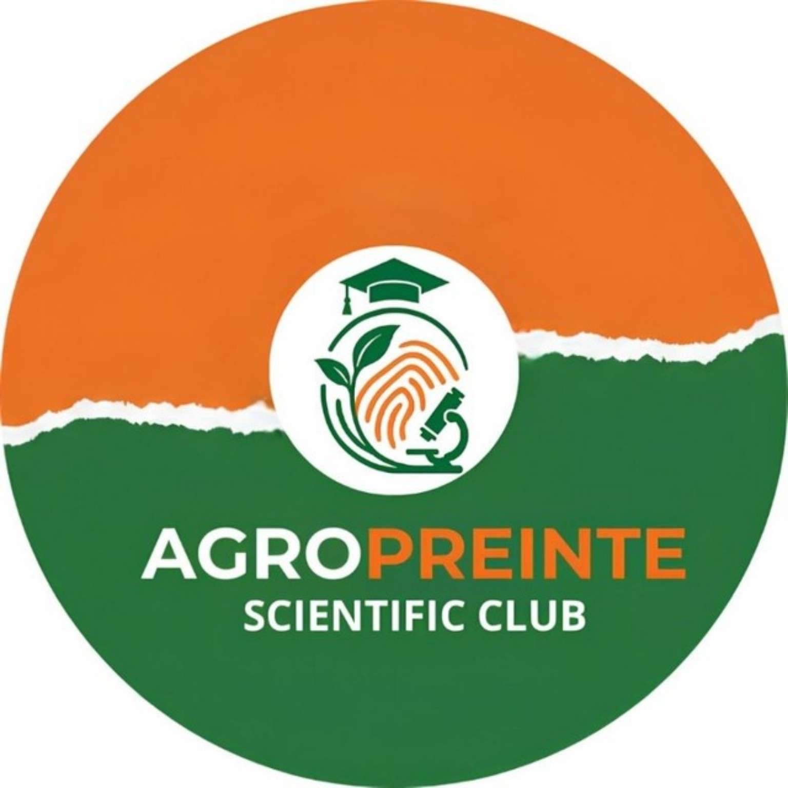

NOVEMBREB
CAMPAGNE DE SENSIBILISATION
Novembre Bleu
Comprendre le cancer de la prostate, connaître les facteurs de risque et discuter du dépistage avec un professionnel de santé.
En savoir plus →
AGROPREINTESCIENTIFIC CLUBAGROPREINTE SCIENTIFIC CLUB · 2026
Deux campagnes de sensibilisation. Un même engagement : la santé, l’information et la solidarité.
Découvrir les campagnes →NOS ENGAGEMENTS
Comprendre les informations essentielles permet de mieux prévenir, de poser les bonnes questions et d'agir sans stigmatisation.
CAMPAGNE DE SENSIBILISATION
Comprendre le cancer de la prostate, connaître les facteurs de risque et discuter du dépistage avec un professionnel de santé.
En savoir plus →CAMPAGNE DE SENSIBILISATION
S'informer sur le VIH, les moyens de prévention, le dépistage et l'importance de lutter contre la discrimination.
En savoir plus →01 — NOVEMBRE BLEU
Quelques repères pour mieux comprendre cette maladie. Les informations ne remplacent jamais un avis médical personnalisé.
Le cancer de la prostate apparaît lorsque certaines cellules de la prostate se multiplient de manière incontrôlée. Son évolution varie selon les personnes et les caractéristiques de la maladie.
Un cancer précoce peut ne provoquer aucun symptôme.
Le dosage du PSA ne suffit pas à lui seul à établir un diagnostic. La décision de dépistage se discute individuellement avec un médecin, selon l'âge, les risques et les préférences de la personne.
La prise en charge dépend du type et du stade de la maladie : surveillance active, chirurgie, radiothérapie ou traitements médicamenteux peuvent être envisagés.
02 — DÉCEMBRE ROUGE
La connaissance est un outil de prévention. L'information, le dépistage et l'accès aux soins doivent être accessibles à tous.
Virus de l'immunodéficience humaine.
Stade avancé de l'infection par le VIH, lorsque le système immunitaire est fortement affaibli.
Le VIH peut être transmis par certains liquides biologiques, notamment lors de rapports sexuels sans protection, du partage de matériel d'injection ou de la mère à l'enfant pendant la grossesse, l'accouchement ou l'allaitement.
Le VIH ne se transmet pas par les poignées de main, les embrassades, les repas partagés, les toilettes, les piscines, les moustiques, la sueur ou les larmes.
Les traitements antirétroviraux permettent aux personnes vivant avec le VIH de préserver leur santé. Une charge virale durablement indétectable grâce au traitement signifie qu'il n'y a pas de transmission sexuelle du VIH (I=I).
Une personne vivant avec le VIH mérite le respect, la confidentialité et un accès égal aux soins. La discrimination et la désinformation n'ont pas leur place.
À PROPOS DU CLUB
AGROPREINTE SCIENTIFIC CLUB s'engage à rendre l'information scientifique et médicale plus claire, accessible et fiable, à travers des actions de sensibilisation et de partage.
POUR ALLER PLUS LOIN
Pour approfondir ces sujets, consultez des organismes de santé reconnus :
Ce site est un support de sensibilisation. Il ne remplace pas une consultation, un dépistage ou les conseils d'un professionnel de santé.